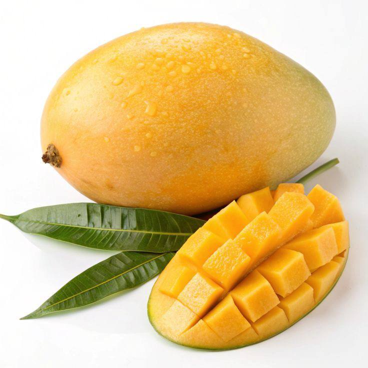

HISTORY
Mango is one of the most popular tropical fruits in Malaysia. It is believed that mango was first introduced to Southeast Asia from South Asia (India region) many centuries ago through trade routes. In Malaysia, mango has been widely cultivated for generations, especially in states like Perak, Johor, Kedah, and Melaka. Over time, local farmers developed many different mango varieties that suit Malaysia’s hot and humid climate. Today, mango is not only eaten fresh but also used in juices, pickles, and traditional desserts.


TYPES OF MANGO
- Harum Manis - very sweet, fragrant and expensive
- Chok Anan - popular commercial mango, less fiber and sweet
- Yusof Taiyoob - a sweet and aromatic mango variety commonly grown in northern Malaysia
- Okrong - a juicy mango with a very sweet taste and soft flesh
- Susu -a mango known for its creamy texture and sweet flavour
- Ijo - a green-skinned mango with sweet flesh and a slight sour taste
- Maha Chanok - a premium mango with fragrant, sweet, and almost fiberless flesh
- Kedah - a local Malaysian mango variety with a sweet and refreshing taste
- Nam Dok Mai - a famous mango variety with soft, golden-yellow flesh and a rich sweet flavour
HEALTH BENEFITS
- Rich in Vitamin C – helps boost immune system
- Contains Vitamin A – good for eye health
- High in fiber – improves digestion
- Antioxidants – help protect body cells
- Helps maintain healthy skin due to natural vitamins
HOW TO PLANT MANGO
1. Choose healthy mango seedlings.
2. Prepare fertile soil.
3. Water regularly.
4. Apply fertilizer.
5. Ensure sufficient sunlight.
FUN FACTS
- Mango season in Malaysia usually happens between March and June
- Some mango trees in Malaysia can live and produce fruit for over 30 years
- Malaysians often eat mango with “asam boi” or chili salt for extra flavour
- Mango is also popular in local drinks like mango juice and “mango smoothie”